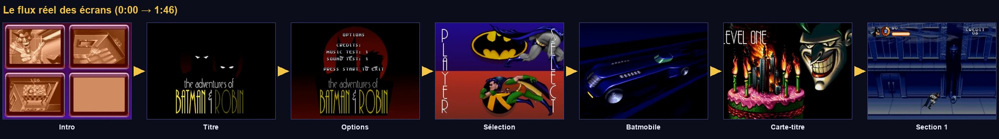
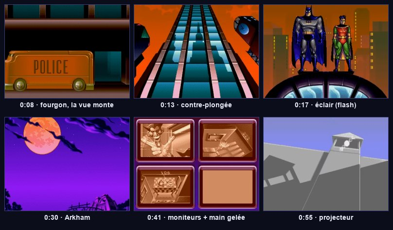
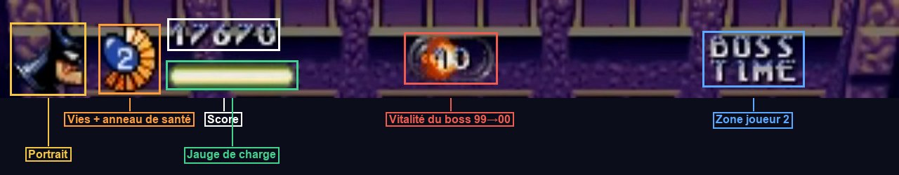
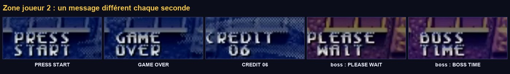
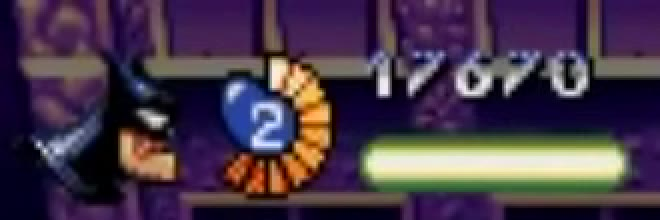

Intro, menus, HUD & flux de jeu
Ce qui transforme trois sections jouables en un jeu : la cinématique d'Arkham, l'écran titre, les options, le choix du héros, la carte-titre, le HUD, le « continue », et le chef d'orchestre qui enchaîne tout cela.
Le flux complet

SceneFlow les enchaîne avec des fondus.┌────────► Intro (attract) ──Start──┐ │ (0:00–1:03) ▼ │ 20 s sans touche ◄────────── Title ──OPTIONS──► Options ──Start──┐ │ │ START │ │ ▼ ▼ │ PlayerSelect ──► Batmobile ──► TitleCard « LEVEL ONE » │ │ │ ┌────────────────────────────────────────────────────────┘ │ ▼ │ S1 Rues ──► S2 Gem Expo ──► S3 Convoi ──► LevelEnd (Batmobile) ──► Title │ │ │ │ │ └──── plus de vies ──► Continue ──oui (crédit)──► reprise de la section │ └──non / 0 crédit──► Title ◄────────────┘ └────────────────────────────────────────────────────────────────────────────
Titre, sélection, partie, continue : chaque écran est un état du jeu, chaque scène Godot en est la réalisation, et SceneFlow gère les transitions. Ce sont les mêmes idées que pour Batman (tome 03), à l'échelle de l'application entière.
SceneFlow, version complète
Ordre des autoloads (Projet → Paramètres → Globals) : Game, PaletteFx (scène), Audio, SceneFlow. La scène principale du projet devient res://screens/intro.tscn.
L'audio
Crée deux bus dans le panneau Audio : Music et SFX. Le ducking de l'ancienne doc B est correct et utile : un AudioEffectCompressor sur Music, avec sidechain = SFX, baisse la musique sous les grosses explosions.
Ajoute la musique à la classe Section du tome 07 :
La bande-son originale est en synthèse FM (YM2612) : Godot ne lit pas les fichiers VGM. Pour un projet personnel, convertis tes propres enregistrements en OGG. Pour un projet publiable, compose ou utilise une musique libre de droits.
La cinématique d'intro

AnimationPlayer. (vidéo 0:08 → 0:55)Le découpage plan par plan, d'après la vidéo :
| Temps | Plan | Réalisation Godot |
|---|---|---|
| 0:00 | Logo SEGA, puis logo chauve-souris + copyright | TextureRect, 2 s chacun |
| 0:07 | Fourgon « POLICE » qui passe, la vue monte le long d'une façade | Sprite animé + tween de position:y sur l'image de façade |
| 0:12 | La façade bascule en contre-plongée | Image pré-dessinée, ou plan raster avec v_line qui étire les lignes (tome 06) |
| 0:16 | Batman & Robin sur le dôme, éclairs | Flash de palette : PaletteFx.flash_white(2, 5) par une piste « Appel de méthode » |
| 0:20 | Yeux dans le noir, puis logo | Deux TextureRect, tween de modulate |
| 0:29 | Pleine lune, panoramique vers le portail d'Arkham | Tween de position:y |
| 0:35 | Salle des moniteurs (Joker, Double-Face, Chapelier fou), une main gelée appuie sur « ALARM » | Sprites + parasites (shader de bruit sur les écrans) |
| 0:46 | Sirène, projecteur qui balaie le mur, flash, Arkham en contre-plongée | Sprite du faisceau en rotation, flash de palette |
| 1:01 | Logo Clockwork Tortoise | TextureRect, puis retour au titre |
Un AnimationPlayer peut animer n'importe quelle propriété (position, visibilité, couleur) et appeler des méthodes à un instant précis (piste « Appel de méthode » : flash, son, changement de plan). On construit toute l'intro sur une frise temporelle, sans code de minuterie.
Écran titre et menu
Le menu ne propose que START et OPTIONS, superposés au logo (1:28). Sans action, le jeu repart en boucle sur l'intro (1:04).
Les boutons Godot réagissent à ui_accept quand ils ont le focus. Sans grab_focus(), personne ne l'a et la manette ne fait rien. Ajoute aussi la touche Entrée et le bouton Start à l'action ui_accept pour que « Start » valide les menus, comme sur la console.
Les options
La vidéo montre « CREDITS: 6 » sans qu'on le voie changer. La plage 1–9 est une supposition. Pense aussi à faire lire user://options.cfg par Game.new_game() si tu veux que le réglage survive au redémarrage.
La sélection du héros
« PLAYER SELECT » : l'écran est coupé en deux bandes, bleue en haut avec l'emblème chauve-souris et Batman qui court, rouge en bas avec le « R » et Robin. Le mot « PLAYER » est écrit verticalement à gauche, « SELECT » à droite (1:33–1:38).
Batmobile, carte-titre et fin de niveau
Trois écrans fixes qui durent quelques secondes : un seul script suffit.
| Scène | Contenu | next_scene |
|---|---|---|
batmobile.tscn | La Batmobile pré-rendue file dans la nuit | title_card.tscn |
title_card.tscn | « LEVEL ONE / HAPPY BIRTHDAY TO ME! », le Joker et le gâteau-ville (planche « Title Cards ») | sections/s1_streets.tscn |
level_end.tscn | Batmobile, puis « À suivre : niveau 2 » | screens/title.tscn |
Le continue
La partie analysée ne contient aucun game over : la présentation exacte de l'écran de continue est inconnue. Le décompte de 9 à 0 est une convention de l'époque, pas une observation.
Le HUD

hud.tscn. (vidéo 6:09)

Hud (CanvasLayer, hud.gd) groupe « hud » · layer = 10
└── Root (Control, plein écran, mouse_filter = Ignore)
├── Portrait (TextureRect) (2, 2) 24×24 : tête du héros
├── Medallion (Control) (26, 1) 26×26 : life_medallion.gd
├── Score (Label) (56, 0) police pixel 8 px
├── Charge (Control) (56, 12) 52×6 : charge_bar.gd
├── BossBadge (Control, caché) (146, 2) pastille ronde
│ └── Value (Label) « 99 »
└── P2 (Label) (246, 2) PRESS START / CREDIT 06 / GAME OVER
_draw()L'anneau de vie segmenté n'existe pas comme nœud tout fait. Un Control peut se dessiner lui-même : on surcharge _draw(), on y appelle draw_arc(), draw_circle(), draw_rect(), et on demande un nouveau dessin avec queue_redraw() quand la donnée change. C'est léger et totalement maîtrisé, pixel par pixel.
Le jeu utilise une police bitmap maison. En attendant, une police pixel libre (par exemple « Press Start 2P », sous licence OFL) en 8 px, avec le filtre désactivé, donne un rendu proche. Si tu as une planche des caractères du jeu, une FontFile de type bitmap construite à partir d'une image est l'option fidèle.
- Au lancement : intro (Start pour passer) → titre → START → sélection → Batmobile → carte-titre → section 1, avec des fondus en paliers partout.
- Sans toucher au titre pendant 20 s, l'intro repart.
- Le HUD affiche le portrait, l'anneau de vie, les vies, le score, la jauge colorée, et la pastille 99 → 00 pendant les boss.
- En perdant toutes les vies : écran de continue ; Start reprend la section en cours tant qu'il reste des crédits.
- Après le Joker : Batmobile, puis retour au titre.